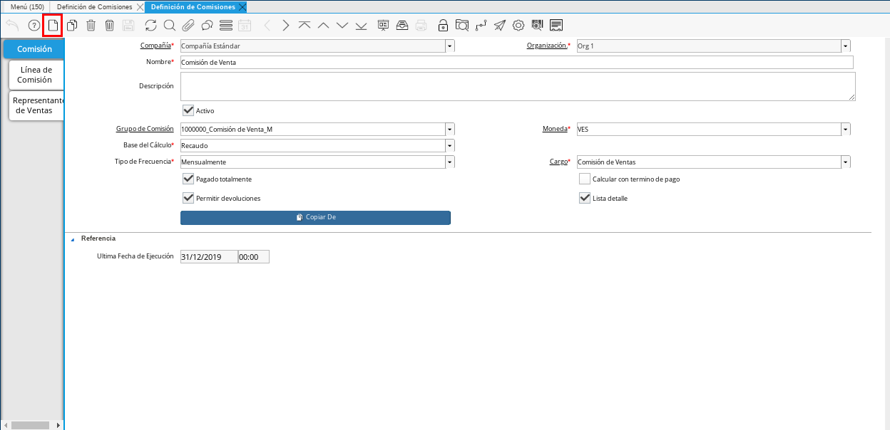
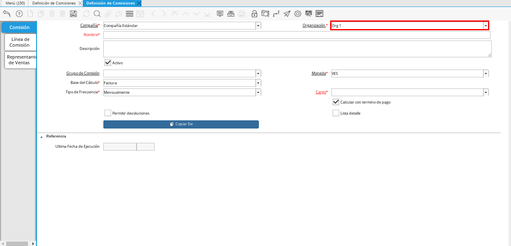
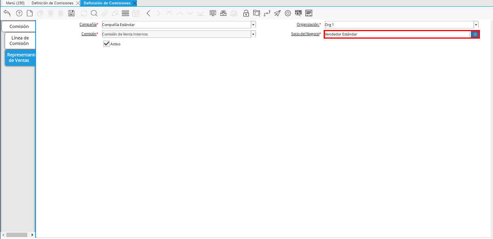

Definición de Comisiones¶
Una comisión es un porcentaje o cantidad de dinero que es cobrado por la venta de productos o servicios, las mismas estan sujetas a reglas o condiciones establecidas por la empresa a los vendedores. Las comisiones son pagadas a los vendedores para motivarlos a vender más productos o servicios.
La definición de comisiones es una configuración que la empresa realiza en ADempiere para indicar cuando pagar una comisión y a quien pagarsela. La forma de pago de las comisiones depende de lo establecido en el grupo de comisión, la base para el cálculo, la moneda y el tipo de frecuencia para el pago.
El presente material elaborado por ERPyA pretende ofrecerle una explicación eficiente con respecto al procedimiento a seguir para realizar una definición de comisiones en la versión 3.9.2 de ADempiere, en la localización Venezuela.
Para explicar el procedimiento detalladamente, se presentará un ejemplo en el cual se definen dos (2) comisiones, comisiones internas y externas, donde las internas se refiere a las comisiones para los trabajadores que laboran dentro de la empresa y externas a las comisiones para los trabajadores que laboran fuera de la empresa. El ejemplo contempla diferentes montos de comisión y apuntando a un mismo grupo de comisión (1000000_Comisión de Venta_M). A continuación es mostrado el procedimiento de la definición de comisiones de vendedores internos de la empresa, debe realizarce el mismo procedimiento para la definición de comisiones de vendedores externos.
Pestaña Comisión¶
Ubique y seleccione en el menú de ADempiere, la carpeta “Gestión de Ventas”, luego seleccione la carpeta “Reglas de Ventas y Mercadotecnia”, por último seleccione la ventana “Definición de Comisiones”.
Imagen 1. Menú de ADempiere
Podrá visualizar la ventana “Definición de Comisiones”, donde debe seleccionar el icono “Registro Nuevo” en la barra de herramientas de ADempiere y proceder al llenado de los campos correspondientes.

Imagen 2. Icono Registro Nuevo
Seleccione en el campo “Organización”, la organización para la cual esta realizando la definición de comisión.

Imagen 3. Campo Organización
Introduzca en el campo “Nombre”, el nombre que corresponde a la definición de comisión que esta realizando. Para ejemplificar el caso planteado anteriormente, es ingresado el nombre “Comisión de Venta Internos”
Imagen 4. Campo Nombre
Seleccione en el campo “Grupo de Comisión”, el grupo de comisión creado según el tipo de frecuencia. El mismo define el tipo de frecuencia a utilizar para el cálculo de la comisión.
Imagen 5. Campo Grupo de Comisión
Seleccione en el campo “Moneda”, la moneda a ser utilizada para calcular las comisiones correspondientes a la definición de comisión que esta realizando.
Imagen 6. Campo Moneda
El campo “Base del Cálculo” indica la regla que será tomada en cuenta para el calcular las comisiones al vendedor, el mismo contiene precargadas las siguientes opciones:
Comisión Personalizada: El vendedor comisiona según las reglas o condiciones establecidas en la empresa.
Factura: El vendedor comisiona por las facturas que tenga una orden de venta que tenga el vendedor asignado.
Orden: El vendedor comisiona por las órdenes de venta que tenga el vendedor asignado.
Pronóstico vs Factura: El vendedor comisiona por porcentaje, el mismo depende del estimado de ventas que tiene el vendedor y de las ventas que haya realizado.
Pronóstico vs Orden: El vendedor comisiona por porcentaje, el mismo depende del estimado de órdenes que tiene el vendedor y de las órdenes que tenga asignadas el vendedor.
Recaudo: El vendedor comisiona si todas sus facturas estan cobradas.
Imagen 7. Campo Base del Cálculo
El campo “Tipo de Frecuencia se usa para definir las fechas de inicio y fin del cálculo. Es decir, cada cuanto tiempo comisionará el vendedor:
Anualmente: Cada año (365 días).
Mensualmente: Cada mes (La cantidad de días puede variar según el mes).
Semanalmente: Cada semana (7 días).
Trimestralmente: Cada tres meses (90 días).
Imagen 8. Campo Tipo de Frecuencia
Note
Si la ventana “Grupo de Comisión” tiene un tipo de frecuencia asignado y la ventana “Definición de Comisión” tiene otro diferente, ADempiere realiza la validación para el cálculo de comisión tomando en cuenta el valor ingresado en el campo “Tipo de Frecuencia” de la ventana “Definición de Comisión”.
Seleccione en el campo “Cargo”, el cargo correspondiente al registro de definición de comisión que esta realizando.
Imagen 9. Campo Cargo
Si el checklist “Pagado Totalmente” se encuentra tildado el vendedor comisiona por las facturas pagadas en su totalidad, de lo contrario comisiona por los pagos parciales de las facturas.
Si el checklist “Calcular con Término de Pago” se encuentra tildado la comisión es calculada en base al término de pago que tenga la factura.
Imagen 10. Checklist Calcular con Término de Pago
Si el checklist “Permitir Devoluciones” se encuentra tildado la comisión es calculada en base a la nota de crédito que contiene asociada la factura.
Imagen 11. Checklist Permitir Devoluciones
Si el checklist “Lista Detalle” se encuentra tildado permite que los detalles de las comisiones sean mostrados en la ventana “Cálculo de Comisiones”.
Imagen 12. Checklist Lista Detalle
El campo “Última Fecha de Ejecución” se refiere a la fecha en la cual el proceso fue corrido por última vez.
Imagen 13. Campo Última Fecha de Ejecución


Note
Recuerde guardar los cambios realizados seleccionando el icono “Guardar Cambios” ubicado en la barra de herramientas de ADempiere.
Pestaña Línea de Comisión¶
Seleccione la pestaña “Línea de Comisión” y proceda al llenado de los campos correspondientes.
Imagen 14. Pestaña Línea de Comisión
El grupo de campos “Referencia” contiene campos que permiten establecer reglas o condiciones para el cálculo de las comisiones de los vendedores que se registran en la pestaña “Representantes de Ventas”.
Imagen 15. Grupo de Campos “Referencia”
Al tildar el checklist “Comisión sólo en Órdenes Específicas”, el vendedor comisiona sólo por la órdenes o facturas que tiene asignadas.
Imagen 16. Checklist Comisión sólo en Órdenes Específicas
Los campos “Organización”, “Grupo de Socio del Negocio”, “Socio del Negocio”, “Categoría del Producto”, “Clase de Producto”, “Clasificación de Producto”, “Grupo de Producto”, “Producto”, “Región de Ventas”, “Regla de Pago”, “Término de Pago”, “Proyecto”, “Campaña”, “Canal”, “Cumplimiento Mínimo (%)”, “Cumplimiento Máximo” y “Procentaje Máximo” pueden ser utilizados para indicar la regla de que los vendedores que se registran en la pestaña “Representantes de Ventas”, sólo comisionarán por las ventas que cumplan con lo seleccionado o ingresado en dichos campos.
Imagen 17. Campo Producto
Si el checklist “Es Porcentaje” se encuentra tildado, indica que la comisión es expresada en porcentaje. En caso contrario, indica que la comisión es expresada en cantidad.
Imagen 18. Checklist Es Procentaje
En el campo “Multiplicador” se introduce el monto de la comisión en porcentaje.
Imagen 19. Campo Multiplicador
En el campo “Cantidad Multiplicadora” se introduce el monto de la comisión en cantidad.
Imagen 20. Campo Cantidad Multiplicadora
Si el checklist “Sólo Positivos” se encuentra tildado, indica que no se toman en cuenta las notas de crédito para el cálculo de las comisiones.
Imagen 21. Checklist Sólo Positivos


Note
Recuerde guardar los cambios realizados seleccionando el icono “Guardar Cambios” ubicado en la barra de herramientas de ADempiere.
Pestaña Representantes de Ventas¶
Seleccione la pestaña “Representantes de Ventas” y proceda al llenado de los campos correspondientes.
Imagen 22. Pestaña Representantes de Ventas

Campo “Socio del Negocio”: Se debe seleccionar el vendedor que corresponde a la definición de comisión que esta configurando.

Imagen 23. Campo Socio del Negocio
Note
Recuerde guardar los cambios realizados seleccionando el icono “Guardar Cambios”, ubicado en la barra de herramientas de ADempiere. Para realizar otro registro de vendedor debe seleccionar el icono “Registro Nuevo” y proceder al llenado de los campos correspondientes.